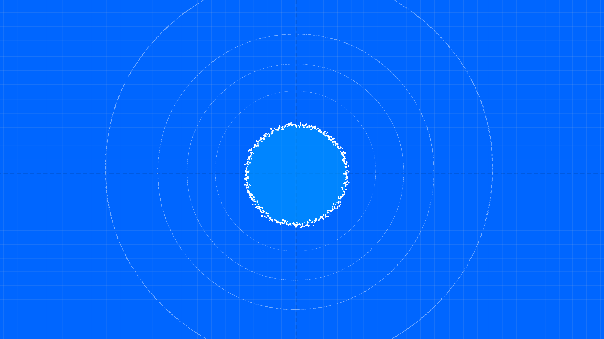

Safety Reef overlap
0%
Exclusivity Neighbour incompatibility
100%
Reef Harmony
0%
A designed educational score for the whole arrangement. It is a weighted average of the Safety and Exclusivity measurements above, weighted by the Reef Penalty slider. It is not the loss function of a trained model.

Controls how strongly incompatible cloud overlap reduces the Reef Harmony Score, from 0 (prioritizing safety, reef overlap alone) to 1 (prioritizing exclusivity, fully penalizing incompatible overlap). It does not move the clouds or change the other measurements.
Press the arrow keys to move this cloud through the latent space. Hold Shift with an arrow key to move further in one step. The Safety and Exclusivity measurements update as it moves.
VAEs: A tale of two overlaps
Training a VAE balances two competing overlaps: how well a decoded image reconstructs the original, and how closely each encoded distribution overlaps the prior. Beta decides how much the second overlap is allowed to cost the first.
Training loss Reconstruction loss beta DKL(qφ(z|x) ‖ p(z))
Hover or focus a term above to see what it corresponds to in the scene.
Reconstruction loss. Representation overlap is where information is lost, and reconstruction errors are forced. The hit is worse for more dissimilar inputs than it is for more similar ones.
KL divergence. The KL divergence term pushes all representations to match the prior distribution p(z), here shown as the reef.
Beta. The coefficient β sets the prioritization and has two intuitive extremes: prioritize information restriction, where all representations become the prior and therefore the same, and information transmission, where all representations are completely separated and therefore distinct.